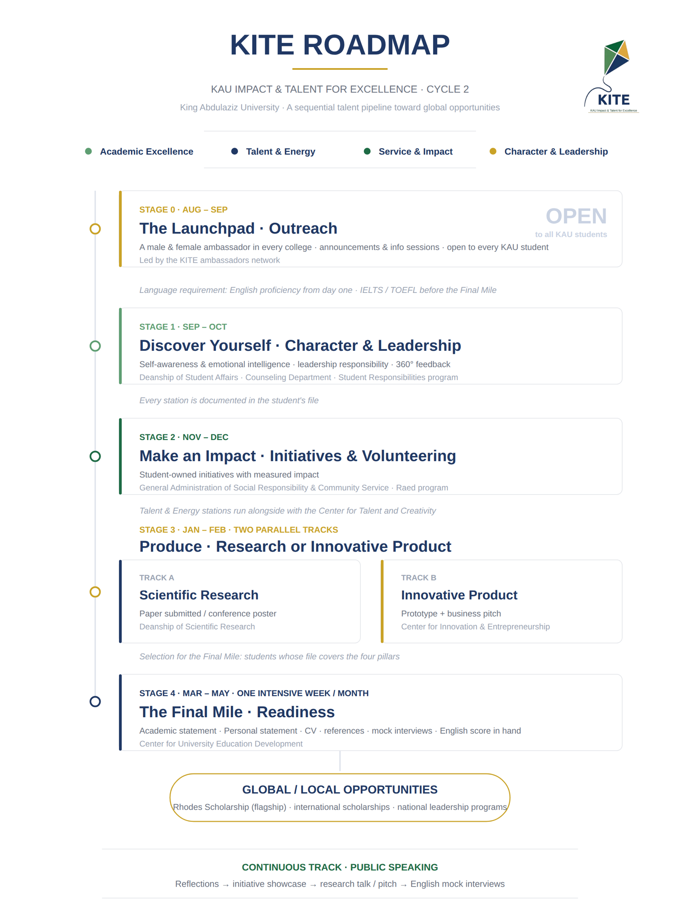
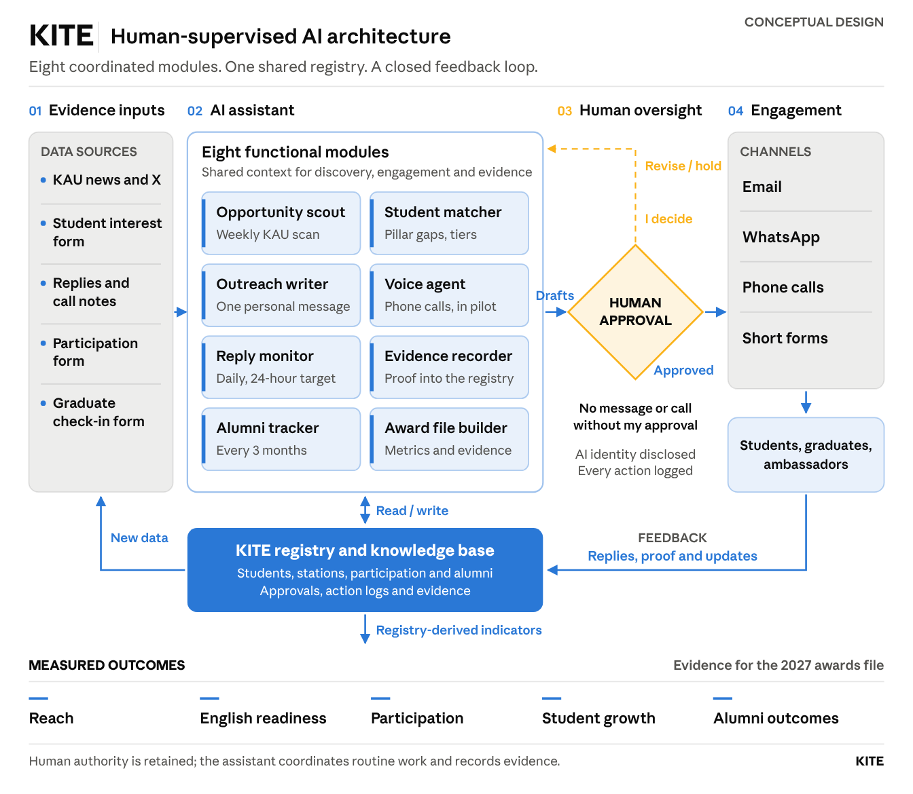

Prepared for His Excellency Dr. Mohammed Kabli, Vice President for Educational Affairs.
KITE now runs as one clear, living cycle: opportunities come in, students take part, their achievements are verified, and we stay with them after graduation. I am delighted to share how it works, and to ask for your support on two ideas that would complete it: badges for our distinguished students, and co-curricular points for our college ambassadors.
The KITE roadmap

Open, and already under way. KITE is open to all KAU students. We began with an introductory meeting, and we introduced KITE to the university community at the National Day event.
The Opportunities Link. Every opportunity open to our students lives on one page, arranged by pillar and updated as new ones appear: KITE Cycle 2 opportunities.
The system at a glance

The assistant carries the repetitive work and I control the gate: every decision stays with me, and each step produces evidence we can measure.
| Module | Its role |
|---|---|
| Opportunity Scout | Follows the university's channels every week and gathers the opportunities |
| Student Matcher | Finds the right opportunity for each student, based on their needs and the gaps in their pillars |
| Outreach Writer | Prepares a personal message for each student |
| Voice Agent | Holds phone conversations, as an early pilot |
| Reply Monitor | Reviews replies every day, aiming to respond within 24 hours |
| Evidence Recorder | Keeps the proof of each participation and achievement |
| Alumni Tracker | Checks in with graduates every three months |
| Award File Builder | Gathers the indicators and evidence for the 2027 award file |
What the system does
- Brings opportunities together. University centers offer workshops, programs, competitions and volunteering. Each one joins KITE as a station under its pillar, with a weekly round to catch new ones.
- Knows every student. One registry holds each student's path across the four pillars (Academic Excellence, Talent, Leadership, Service) with English alongside, and shows who still needs what.
- Reaches each student personally. An AI assistant working in my name prepares a personal message for every student, by email and WhatsApp, with phone calls in pilot. Nothing is sent without my approval.
- Stays in the conversation. It checks replies every day, answers what it knows, and brings the rest to me.
- Records proof, not only attendance. When an opportunity ends, the student fills a short form with a link to their proof, and the registry updates itself.
- Leads to the Final Mile. The assistant shortlists students who have graduated or graduate next year, built most or all pillars, and have English. I select the final 25, who go through a workshop, one-to-one mentor time, peer review, then submission.
- Stays with our graduates. Every three months a short, friendly form asks what is new: an admission, a scholarship, a job, an award. These outcomes are the real measure of KITE.
- Builds our award file as we go. Every verified achievement, shared with the student's consent, feeds the evidence and live metrics for our THE Awards Arab World 2027 entry, so the file is ready when entries open.
Our ambassadors connect it all: one male and one female ambassador in every college carry opportunities to their peers and bring students' needs back to us.
Similar programs for undergraduates
These programs develop students during their university years, as KITE does. KITE combines what they offer separately: an open track for every student, and a selective final stage.
| Program | University | What it does | How KITE relates |
|---|---|---|---|
| Melbourne Plus | University of Melbourne | Open to all students, with a digital credential for each capability | The same open, documented model. KITE adds a selective final stage |
| Nottingham Advantage Award | University of Nottingham | Assessed co-curricular modules, digital badges, and recognition on the transcript | The model for our badges |
| Edinburgh Award | University of Edinburgh | Personal development built around existing activities, recorded on the student record | The same idea of building on what the university already offers |
| Fellowships advising | Harvard University | Prepares and nominates students for Rhodes and similar scholarships | The model for our Final Mile. KITE starts earlier, with every student |
| Gifted and Outstanding Students Program | King Saud University | Selects high-GPA students from the first year, with research support and privileges | KITE is open to all, then selective |
| Rhodes advising | KFUPM | Advising and workshops for Rhodes applicants | KITE prepares for many destinations, not one |
In our review we found no program that combines both. KITE is the first KAU-wide model that is open to every student and ends in a selective final stage.
Where our students can go next
These are not similar programs. They are the opportunities our students can join as a result of KITE, in the Kingdom and abroad:
- Rhodes Scholarship at the University of Oxford
- Future Geniuses (نوابغ المستقبل), the Dallah Albaraka scholarship
- Youth Leaders Program by Salam for Cultural Communication
- Qimam Fellowship (قمم), with McKinsey & Company
- Jeel Tamooh (جيل طموح), with Boston Consulting Group (BCG)
- Misk programs (مسك), by the Mohammed bin Salman Foundation
- KAUST graduate admission and internships
What comes next
KITE Summer. A summer program with a short track for each pillar. Each student chooses one and finishes with a documented result that goes straight into their file.
External partnerships. The second improvement is to open KITE to organizations outside the university: companies, foundations and public bodies that can host our students for summer placements and community projects, offer mentors, and welcome our graduates. This gives students real experience beyond campus and brings the university closer to the destinations they are aiming for.
What the award asks for, and how the system prepares it
The THE Awards Arab World entry asks for a measurable result, supporting evidence, and proof of institutional commitment. The system gathers each of these as part of the daily work, so the file is ready when entries open.
| What the entry asks for | What we will show | Where the system gets it |
|---|---|---|
| Most significant measurable result | Where our graduates went: scholarships, admissions, fellowships, jobs | Graduate check-in form every three months |
| Supporting evidence | Verified student achievements, each with its proof | Participation form after each opportunity |
| Impact on students | Growth before and after, and satisfaction (Cycle 1: 37% improvement, 99% satisfaction) | Measured in the Final Mile |
| Scale of the initiative | Students and colleges reached | The registry, live from the interest form |
| Institutional pace and roadmap | Centers engaged, opportunities delivered, and formal recognition by the university | Stations list, and the badges and points once approved |
Incentives that keep it going
To keep this momentum, I would love your support for two simple incentives:
- KITE badges for our distinguished students, issued in the university's name, one for each pillar, awarded on verified achievements.
- Co-curricular points for our college ambassadors for every semester of active service, calculated from the KITE registry so colleges get no extra paperwork.
Why this matters, for the award and for continuity. Recognition keeps students and ambassadors engaged year after year, so KITE continues beyond any single cycle. It is also the one piece of evidence our entry is still missing: it shows the judges that KAU stands behind the initiative.
With sincere thanks for your continued support.
Dr. Somayah AlbaradeiKITE Initiative Lead and Advisor to the Vice President for Educational Affairs
Note for the meeting: should the Rhodes page on the KAU website become the KITE page?
Note for the meeting: can we help our students with the TOEFL and IELTS tests?